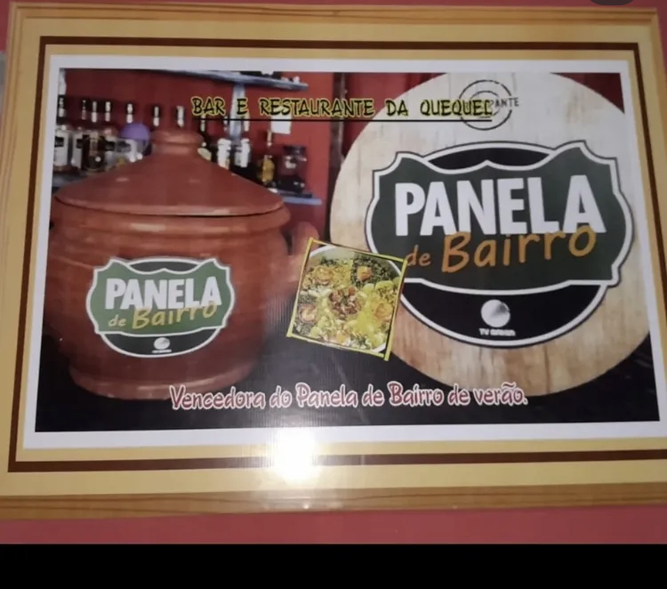
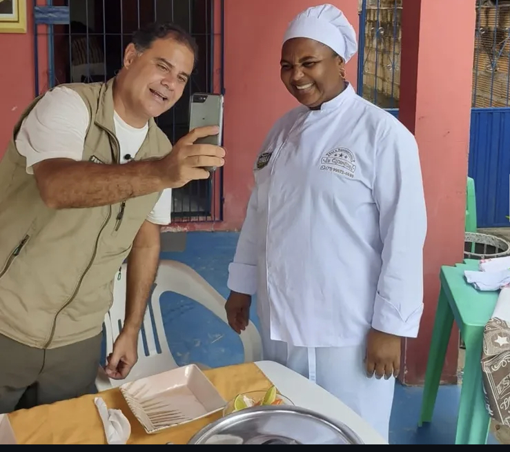
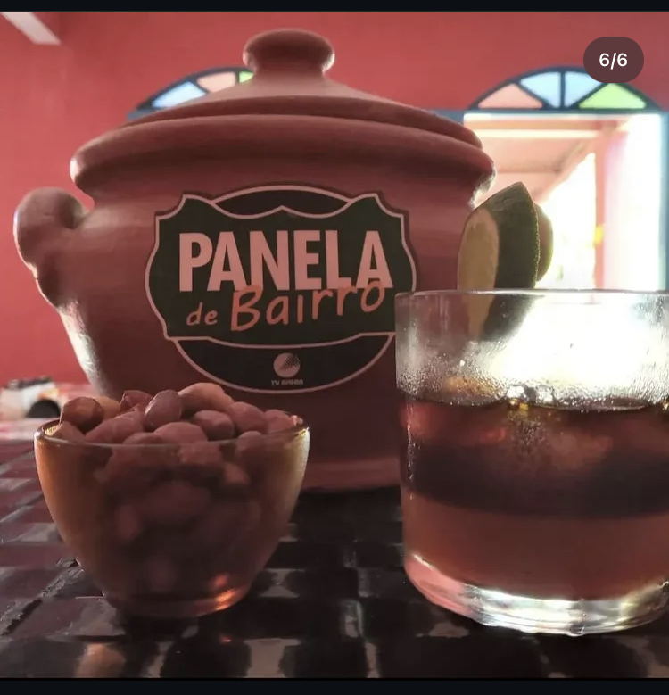

📍 Misericórdia - Itaparica, Bahia
Conheça Nossa HistóriaO Bar e Restaurante da Quequel traz o melhor sabor da tradição baiana diretamente de Misericórdia, na Ilha de Itaparica. Comandado com muito amor e tempero pela nossa querida Quequel, o restaurante ganhou destaque regional e o coração do público.
"Ganhadora oficial do prêmio Panela de Bairro de Verão da TV Bahia / Rede Globo!"
Aqui, cada prato conta uma história de dedicação, frescor e raízes nordestinas. Venha saborear o tempero campeão!

O quadro que consagra a Quequel como a grande vencedora do Panela de Bairro de Verão.

Bastidores das gravações e a simpatia da nossa cozinheira para as telas da TV Bahia.

O legítimo e merecido troféu ao lado do melhor acompanhamento da ilha.